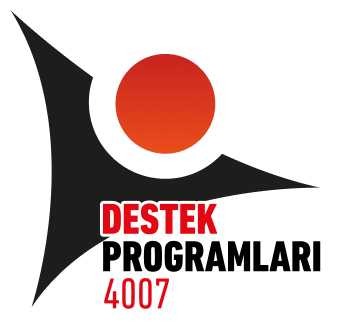

ℹ️ Proje Hakkında
Bu atölye uygulaması; NASA veri setlerini kullanarak Bergama'nın 2050 yılına kadar karşılaşabileceği olası iklim senaryolarını modelleyen etkileşimli bir STEM simülasyonudur.
Vizyonumuz: "Geçmişten Geleceğe Bilim" anlayışıyla, katılımcıları sadece verileri okuyan değil, 2050 yılının kaderini belirleyen aktif karar vericilere dönüştürmek.
Kapsam ve Yenilikler: Uygulamamız, her yaş grubuna hitap edebilmek için özel olarak tasarlanmıştır:
- Çift Modlu Deneyim: Öğrenciler için oyunlaştırılmış "Kahraman Modu" ve yetişkinler için analitik "Strateji Modu".
- İnteraktif Karar Masası: Enerji türü, ağaçlandırma ve su tüketimi kararlarının 2050 yılındaki sıcaklık ve yağışa etkisini anlık görselleştiren altyapı.
- Kişisel Karbon Ayak İzi: Simülasyon sonrası, katılımcıların günlük yaşam tercihlerini test eden kişiselleştirilmiş değerlendirme sistemi.
- Sıfır Atık Hedefi: Basılı kağıt materyaller yerine tamamen dijital "İklim Karnesi" ve "Gelecek Raporu" oluşturma özelliği.

TÜBİTAK 4007 Destekli Proje

"Geçmişten Geleceğe Bilim" Şenliği - Bergama
"Çevre için fedakarlık yapmazsanız, çocuklarınız için fedakarlık yapmanıza gerek gerek kalmayacak."